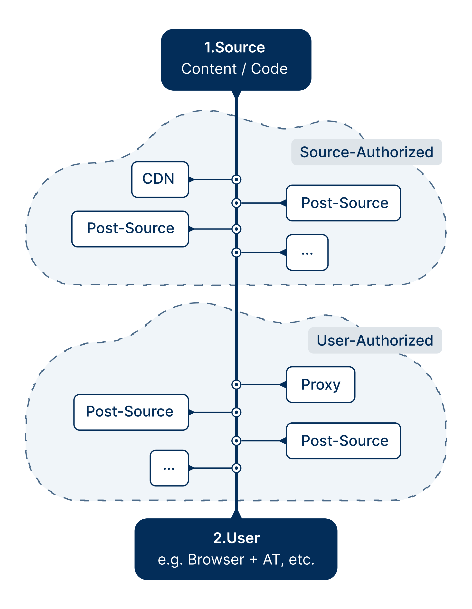

This document examines the trade offs and benefits of dynamic accessibility
remediations applied to web content in real-time to deliver accessible web
experiences. A systematic approach is used to evaluate numerous atomic functional capabilities.
ranging from alternative text and personalized visual
presentation to interactive components. The outcome of the trade-offs and benefits evaluation is cross-referenced to WCAG for each capability.
Each capability is also assessed for automation
based on the presence of
programmatically recognizable patterns conducive to automated adaptation.
The technological approaches considered include the same HTML, CSS, and JavaScripted
adaptations commonly used today achieving in-source accessibility, but effected dynamically in content delivery pipelines
and browser extensions, all without requiring additional on-screen widgets.
Management and maintenance concerns, as well as
forward-looking capabilities, are addressed using the same systematic trade-offs and benefits approach. A closing
discussion articulates our human-centered design principles and an appendix
clarifies responsibilities across the ecosystem.
Introduction
Scope
What seems to be a single web page to most users today is actually anything but that.
Today's world wide web is a complex blend of multiple original sources, mediated by server-side code to deliver a cohesive user experience. It is the result of a design and development process yielding experiences that work well for some users but fail for others, especially when W3C standards and best practices are indifferently engineered or inconsistently applied. This leaves many websites and online applications inaccessible to people with disabilities.
The current remedial approach for addressing this accessibility failure requires that developers update source code to conform with accessibility standards more closely. While we certainly support optimizing in-source accessibility, modifying the original code may not always be feasible. It's also often the least efficient way to deliver different personalized experiences to different individual users. Furthermore, it can be viewed as too time-consuming and costly by business owners.
This document explores how various real-time post-source adaptations can deliver accessible user experiences—and more varied accessible experiences—all without
requiring changes to the original source.
The diagram below illustrates where the adaptations discussed in this publication fit within a typical server and client data flow:
Initially,
The content to be rendered to the user, together with HTML, CSS, and JavaScript code is sourced. This is the source layer, though as noted above it's generally many sources, and not a single source.
Various adaptations may be applied to address specific accessibility needs for the content user—the first layer of post-source adaptation.
Finally, the completed mashup is delivered to the end user for rendering and
interaction with the end user's device tools,
such as the browser and perhaps also some
assistive technology—the last layer of post-source adaptation.

Fundamental Diagram of Data Flow
The diagram represents the flow of digital content and code from its origin to the user.
All entities in the diagram are drawn as clouds, except for the source and the user, who are represented by rectangles. This distinction is intentional.
Source Rectangle & Post-Source Clouds: Represent multiple contributors accessed via URL or URI whose provenance may not be clear to the user.
Rectangle: The user is represented as a rectangle to illustrate a clear, defined entity—the person receiving and interacting with the final content, on that person's devices. The user is the recipient of the final mashup of all modifications
and adaptations.
Source (Content/Code): At the top, the source is where content and code originate. This could be a website, application, or other digital platform. A thick line descends from here representing the main data flow,
while post-source modifications join along the way, merging with the thick line, affecting the final experience.
Post-Source Additions: As the content/code travels to the user, post-source modifications can be added. These are categorized into two types:
Source-Authorized: These modifications are controlled or approved by the website owner. Examples include third-party scripts and or content delivery network (CDN) assets.
User-Authorized: These adaptations are added by the user, without website involvement or approval. Examples include browser extensions, antivirus filters, and custom scripts.
User Additions: At the bottom, the user receives and interacts with the final mashed-up digital content on their own devices and affordances. Examples include the browser, user agent, assistive technologies (AT) on a laptop or desktop computer, and also on a smart phone, and perhaps also on a tablet, perhaps also cast to a wall-mounted video display and perhaps also several surround-sound speakers.
What is Meant By Edge? and Post-Source
In this document the term edge technology refers to technologies closer to the user. Often, it's the technology directly in the user's hands. Or, it may reside on a content delivery network (CDN) server--in the Source Authorized domain (as diagrammed above)—where content is actively being personalized for the user. The terms post-source and edge are essentially synonymous. We use the term edge especially to emphasize that it is the user's experience that really matters when considering accessibility, rather than where in the data flow remediation is effected.
Post-Source & Overlays
Two recent actions by the U.S. Government have referred to the term overlays. First a
regulatory ruling by the U.S. Attorney-General
referenced an earlier version of this publication. More recently,
the U.S. Federal Trade Commission (FTC)
issued a consent decree against a vendor, citing certain advertising claims in the marketing of a product called an overlay.
While overlay is not a precisely defined term in either of these documents, in both cases the term is used to describe post-source implementations that modify the presentation or behavior of published web content in real-time,
often by injected
scripts and a visible on-screen button.
These implementations share some techniques with the approaches documented in this publication, but they represent only a subset of the broader post-source methods we discuss here.
It is essential that vendors who are marketing products and services based on post-source technologies clearly communicate
the scope and limitations of their approach. Forthright representation is also essential for building
trust. Vendors marketing approaches such as those discussed in this document should carefully and
transparently articulate what their technologies and approaches can genuinely deliver. The criteria of the internationally accepted WCAG Success Criteria are cross-referenced throughout this document because they remain valid whether applied in source or post-source through dynamic enhancements.
Capabilities & WCAG's Outcomes
Our focus is user-centered and outcome-driven. We refer to each potential remediation as a capability because our topic in this document is the technical, post-source intervention; but, we are mindful that such post-source remediations are performed in order to
serve the user's success—which is the true outcome. Wherever a capability is described, it should be understood as a means of delivering a concrete, successful accessibility outcome, especially in cases where the source
experience would otherwise fail.
The wide range of specific web accessibility outcomes
sought in this document can be accomplished through the application of appropriate post-source methods.
without recourse to additional UI elements such as pop-up control panels or
accessibility widgets. Indeed the same technologies and methods applied in-source—HTML, CSS, and JavaScript—also constitute the post-source toolkit. There is no post-source technology available only to post-source, and there is no in-source method post-source may not appropriate.
In the main, the classic paradigm of a web domain serving content directly to end users across the Internet has long ago become a historical artifact.
Today's typical web page is a dizzying composite of multiple content streams injected from various sources, including content unique to the user's locale and even to the specific user. Content
delivered to a user today may be a unique one-off composite that may well change when the page is refreshed. The 2021 Web Almanac notes more
than 20 third-party injection streams for today's typical website, with 10% containing over 90 separate content injections.
The source of the typical website
today is actually many sources.
Even bespoke web applications aren't always created by a single
source. Few developers exclusively use their own code. They rely on
libraries, components and frameworks to build their web content.
None of this should surprise us. The fundamental nature of hypertext almost demands the behavior. It illustrates how appropriate the term web actually is for describing the environment.
About This Document
This section provides an overview of this document. It describes what capabilities are addressed, and then how each capability is examined and evaluated.
The Capabilities Discussed
Our analysis of various accessibility related capabilities is organized by the primary coding technology expected for that capability as follows:
Content—Usually HTML
Presentation—Usually CSS
Functionality—Usually JavaScript
We next discuss capabilities related to Management of accessible web service delivery that can be accomplished with edge and post-source technologies. This is followed by a discussion of capabilities and edge services we consider aspirational because they are yet to be realized in the web world.
Lastly, we append a discussion of the value of Human Centered Design to our analysis followed by a review of typical roles and responsibilities that belong to various players in the web world user experience ecosystem.
How We Evaluate Each Capability
Each capability we examine is considered from the following perspectives:
Source—Identifies how the original source code can introduce accessibility issues that require remediation.
Trade-Offs—Examines the implications of performing remediation post-source, including potential redundancies or limitations compared to fixing issues in-source.
Benefit—Highlights the accessibility improvements delivered to end users and any added control they gain from post-source adaptation.
Automatability—Evaluates whether the capability can be automated based on the presence of programmatically recognizable patterns conducive to automated adaptation.
Content—Usually HTML
This layer of delivered content consists of words, graphics, and rich media objects. In the main it is created using HTML, both static and dynamic.
Content Details
Provide Alternative Text
Alternative text is a fundamental and well established accessibility accommodation (dating to the era of HTML 3.2). No good reason for missing alt text remains, yet far too many sites are missing alt text today.
Source
WCAG has always expected sites would supply alternative text for all images—yet missing alt text is still pervasive in web content.
Images and other graphical elements within many modern web pages are set as editable elements that can be added to templates and web pages by different team members, such as Marketing, after the core website structures have
been coded. This often leads to situations where images are added by non-technical people who are not required to enter alternative text or are unfamiliar with authoring appropriate alternative text. So, while there's every reason to expect alternative text in source, it remains missing far too often.
Trade-Offs
It is reasonable to expect source provided alternative text will be superior in quality. Post-source provided alt likely will not engage the content authors and therefore may fail to properly communicate the functional import of graphical objects.
Benefit
Post-source methods can engage the services of experts in proper alternative text authoring. But, however the alternative text is provided, there's no longer any excuse for missing alt text.
Automatability
In many cases—Alts, as they are static and do not require the state property to be set and checked in the accessibility tree, are among the most likely nodes on the accessibility tree to benefit from post-source
automation. This includes identifying decorative images missing a null attribute.
Provide Tooltips
This capability supplies a small pop-up window that appears
on hover to display additional information about an element on the page for users who benefit from enhanced
contextualization or clarification.
Source
Source content can, and sometimes does provide this functionality.
Trade-Offs
This is an enhancement post-source remediation offers in situations where additional contextualization and status clarification is particularly beneficial for certain users such as screen reader users or for persons living with cognitive or learning disabilities.
Benefit
Supports comprehension for users who require the enhanced support in a manner that does not interfere with the fundamental functionality of the content.
Automatability
In many cases—Automation can generate tooltips for certain elements by leveraging metadata and contextual cues. However, ensuring that tooltips provide meaningful, non-redundant, and contextually relevant
information requires human oversight, especially in complex interfaces.
Indicate Language
This capability correctly specifies the primary language of a
web page when the declaration is incorrect or missing entirely.
Source
It is expected source content will correctly specify the page's language using proper language declaration tagging.
Trade-Offs
There's no particular advantage to performing this task post-source.
Benefit
Content lacking a correct programmatic language declaration will often be incorrectly rendered by TTS for screen reader and read-aloud users. It will inevitably fail for braille users.
Automatability
In many cases—Automated detection can infer the primary language of a webpage using existing metadata or linguistic models. However, in multilingual content or cases where code-level declarations conflict
with actual text, human verification is required to ensure proper tagging.
Provide Titles
This capability provides for meaningful titles for pages and/or
iFrames within pages and provides screen reader users a more efficient and meaningful browsing experience.
Source
Though there's every reason to expect appropriate titles will be provided in source, titles are often overlooked or automatically generated by CMS platforms, leaving them generic, duplicated, or irrelevant. This is common in systems where non-technical team members are responsible for adding new pages or
content.
Trade-Offs
Sometimes the content author may not have prioritized or fully understood the
significance of a page title's role in accessibility (and SEO).
While post-source remediation typically lacks the content author's contextual understanding, it can still provide accurate and meaningful title content.
Benefit
Post-source remediation offers a valuable opportunity to audit and enhance page titles as part of a quality assurance process. Applying accessibility expertise after content publication ensures that critical elements
such as page titles are not only present but appropriate to the content.
Automatability
In many cases—Post-source automation can identify pages with missing or
duplicated titles and insert improvements. However, generating
contextually accurate titles often requires manual input or review to
ensure relevance.
Rich Media
Provide Video Captions
This capability provides caption text displaying along with
the video and synchronized with it. HTML also supports an Enhanced Caption mechanism.
Source
It has long been expected that source will provide human edited captions, as the content provider is presumed most knowledgeable about the content, and human editors best able to assure caption accuracy.
Trade-Offs
The cost of generating human-edited captions is prohibitive, promoting the use of automated captions. However, automation often makes mistakes.
Benefit
Because the cost of generating human-edited captions is prohibitive, automation is almost universally relied upon. Most significantly, captions can always be provided post-source because HTML 5 was designed to support post-source caption provisioning.
Automatability
In many cases—Automated captions can be generated using AI based speech recognition tools, but these often introduce inaccuracies, especially for domain-specific terminology, multiple speakers, or background noise. Human review is necessary to ensure proper synchronization and contextual correctness.
Provide Descriptions of Video
This capability provides descriptive narration of key visual elements designed to make visual media accessible to people who are blind or visually impaired. Most common descriptions are provided as an additional audio track timed not to interfere with spoken dialog. Creating descriptions that both enhance the audio experience and do not obscure dialog requires skill. Both a text based mechanism and an extended mechanism are supported by HTML specifically to make it easier for third parties to provide helpful descriptions post-source.
Source
It is generally assumed that source will provide descriptions of video.
Trade-Offs
There is no intrinsic benefit to providing descriptions post-source except in the particular user scenarios cited in this section.
Benefit
The HTML 5 markup mechanisms supporting video descriptions were specifically designed to support post-source descriptions in order to support post-source use cases. Different descriptions are needed, for example, when a video is described for general entertainment purposes as opposed to a university course on set design.
Automatability
In no significant way—While AI is becoming quite competent at plausibly describing still images, it is not yet competent at describing moving imagery.
Remediate PDF
This capability provides a much needed service because far too many PDF documents published on the web fail accessibility. It supports tagging and
otherwise marking up PDF documents in order to make them more accessible.
Source
Ideally, PDFs are created with accessibility in mind; however, this is not always the case due to lack of awareness, time constraints, or software limitations. Additionally, website or application owners frequently publish
PDFs that they did not create themselves, sourced from third parties or legacy archives. As a result, they inherit accessibility issues that were introduced earlier in the document's life cycle, making remediation necessary
after publication.
Trade-Offs
The original PDF creator has the best understanding of the document's structure and intent, and should make it accessible at source. The publisher can also provide its contents in an alternative, arguably far more accessible format, such as an HTML
version. Remediating a PDF post-publication is time-consuming and often requires expert intervention. Automated tools can help, but they are not always reliable in producing fully compliant results since complex issues — such
as correcting reading order — often require manual review and adjustment.
Benefit
At a minimum, Edge technology can warn users before opening an inaccessible PDF so they can take alternative steps, such as requesting an accessible version or using assistive tools to attempt interpretation. At best, post-source
remediation can enhance accessibility by removing barriers to access.
Automatability
In some Cases—Automated tools for detecting accessibility issues in PDFs are increasingly effective, identifying a wide range of problems such as missing tags and lack of alternative text. However,
full remediation remains a challenge, as automation struggles with nuanced tasks like ensuring logical document structure and interpreting complex visual elements.
Presentation—Usually CSS
The capabilities discussed in this section are afforded users to facilitate content rerendering utilizing presentational characteristics each individual user finds most accommodative. These are accommodations that allow users to perceive and understandpublished content and services. For persons with print disabilities, these capabilities starkly illustrate the superior accessibility of web content over printed media, because printed media cannot be similarly accommodating. Whatever look and feel a content provider may have chosen and published, the user's adaptations must necessarily take precedence for reasons of accessibility. To put it in other words: The author proposes, but the user disposes.
We have a strong preference for CSS in presentation rendering because CSS is most fungible. Also, accessibility is natively addressed by W3C's CSS specifications. Achieving similar results through other technologies leaves the developer directly responsible for all aspects of accessibility in their code. Thus rendering the presentation layer through technologies other than CSS is highly likely to prove inaccessible and require remediation.
Manage Cursor & Focus
This section addresses capabilities related to enhanced focus visibility
Isolating Specific Semantic or Interactive Components for Efficient Browsing and Access:
methods and technologies used to enhance user experience by isolating specific elements within a digital interface. It enables users to navigate efficiently through content by focusing on particular types of elements, such
as headings or buttons.
Optimize Cursor Size
Some users require a more visible cursor and appreciate the capability that can increase the standard cursor size
by up to 400% to ensure the pointer always remains visible to them. This facilitates faster and
more accessible navigation through hyperlinks, tabs, and form elements.
Source
It is possible to support this capability in source content directly.
Trade-Offs
There is no particular benefit to performing this mediation post-source.
Benefit
Lets users personalize their experience even when native controls are hard to find. More personalization options simplify instant adjustments without having to learn or recall OS settings and menu location.
Automatability
In many cases—While browser settings and CSS adjustments can enlarge the cursor automatically, ensuring consistency across different operating systems and user environments may require manual intervention.
Certain interactive elements may also require testing to prevent visual overlap.
Optimize Hyperlink Visibility
Some people require greater clarity regarding which spans of text or graphics in web content are functioning as hyperlinks. This capability facilitates selecting the text or image that serves
as a hyperlink and causing it to be displayed in a different, more perceivable way
to help users more easily identify the hyperlinks on a page.
Source
By definition this capability is needed because source is too frequently unclear about its hyperlinks,
at least for significant user segments.
Trade-Offs
There is no particular benefit to performing this mediation post-source.
Benefit
Allows users to better distinguish links without relying on the vagaries of site design. More control over link appearance improves navigation and reduces frustration.
Automatability
In many cases—Automated tools can modify the styling of hyperlinks to increase visibility, but ensuring that these changes align with the website's design and usability principles requires human
evaluation. Edge cases, such as images serving as links without clear indicators, often require manual adjustments.
Ensure Keyboard Access to Interactive Elements
Not all users of web content are able to use a mouse. Many users rely on TAB and Shift+TAB, together with arrow keys to navigate web content. Mobile device users similarly rely on various swipe and single and multiple-finger touch actions (called gestures) to navigate web content and to interact with it. Keyboard navigation is fundamental to web accessibility and needs to be ensured by content publishers.
Source
Many web applications rely on mouse-driven and touch events, which can exclude users who depend on keyboard navigation due to physical limitations or personal preference.
Trade-Offs
Providing comprehensive keyboard support may require significant restructuring of event handlers in web applications, potentially increasing development time and complexity.
Benefit
Ensuring keyboard accessibility for all interactive elements significantly improves the usability of web applications for users with motor disabilities and those who require or prefer keyboard navigation.
Automatability
In no significant way—Automatically ensuring keyboard access involves modifying event handlers and potentially the DOM structure, which can affect existing page scripts and styles. Autonomous verification of
these changes without impacting user experience or other functionalities is not currently feasible.
Manage Focus Through Interactive Processes
This capability supports users in navigating content and in staying focused on those portions of content they require in the moment.
Source
Focus management is critical in dynamic web applications where elements are frequently updated. Poor focus control can disorient users, particularly those who live with cognitive or learning disabilities, or who rely on screen readers.
Trade-Offs
Implementing robust focus management involves complex event handling and state tracking, which can complicate application code.
Benefit
Proper focus management ensures a smoother navigation experience for all users, allowing them to maintain context and control through dynamic changes.
Automatability
In some cases—While focus management can be scripted, verifying that automated focus adjustments do not disrupt user experience or interfere with other interactive elements typically exceeds the capabilities of current autonomous systems.
Supply a Reading Guide
Some users benefit from a horizontal line that appears
below the text they're reading in order to help them keep their place as they read. This facilitates staying focused.
Source
While it could be supported in source content, this capability is rarely (if ever) available in source.
Trade-Offs
There is no particular benefit to performing this mediation post-source.
Benefit
Helps users track text effortlessly, reducing eye strain and distractions. Providing this control enhances focus without requiring site modifications.
Automatability
In many cases—Automated solutions can generate visual reading guides, but ensuring they do not interfere with interactive elements or page scrolling behavior requires careful testing. Personalization options for individual users may also need manual configuration.
Optimize Text Styling
Some users require different fonts (or different font characteristics) in order to comprehend and interact effectively with web content. This section groups those capabilities.
Provide Accessible Fonts
Not all users are able to read any font a web content publisher may choose. This capability allows the publisher's content to be reformatted in a user-chosen font the user is comfortable using.
Source
While it could be supported in source content, this capability is rarely (if ever) available in source.
Trade-Offs
There is no particular benefit to performing this mediation post-source.
Benefit
Ensures readability without relying on publisher choices. Personalized font options improve comprehension and reduce eye-strain.
Automatability
In many cases—Provided a valid, user-selected font choice is known.
Provide Dyslexia Friendly Fonts
Fundamentally this capability differs from the Fonts section above only in that the proffered fonts are understood to be particularly usable by many people living with
dyslexia. Typically, these fonts provide more distinctive symbols intended to avoid user confusion through font design approaches such as increased baselines, thinner tops, and a larger x-height. Frequently they are proprietary fonts requiring licensing arrangements.
Source
Websites typically rely on standard system or decorative fonts that are rarely
optimized for persons living with dyslexia.
Trade-Offs
Switching to dyslexia-friendly fonts may slightly alter the visual
appeal or branding of the site. Designers and stakeholders may wish to
approve font changes. However, most application of this capability will be user, and not source authorized.
Benefit
Using dyslexia-friendly fonts reduces cognitive load and improves the
reading experience for some, possibly even many users living with dyslexia, making the site more
inclusive.
Automatability
In some cases—Automated tools can interchange instances of inaccessible typefaces for dyslexia-friendly
equivalents.
Make Pricing Comparisons Accessible (Strikethroughs)
This capability insures that screen reader users can understand the prior price of an item. Displaying the prior price using strike-through or crossed-out fonts, and then providing the new price immediately next to these does not work for screen reader users. These users will have no idea which is the prior and which the current price without additional content and tagging.
Source
Pricing details are often designed with an emphasis on visual appeal,
such as small text or complex layouts, making them inaccessible to
screen reader users and users with visual impairments.
Trade-Offs
Simplifying pricing layouts may require adjustments to existing design
templates, which could impact aesthetic preferences or marketing
strategies.
Benefit
Accessible pricing ensures all users can clearly understand product
costs and options, improving transparency and trust.
Automatability
In some cases—Automated tools can identify issues such as insufficient
text contrast or missing semantic elements in pricing sections. However,
optimizing the presentation of pricing information requires developer
intervention.
Optimize Text Size
Some users need enlarged, or perhaps diminished fonts in order to read content comfortably. This capability allows increased or decreased font size
adjustments through an interactive widget.
Source
This capability is sometimes provided by source.
Trade-Offs
Text size is typically configurable in
the operating system. However, not all applications consistently honor the setting and can defeat the user's intent.
Benefit:
Lets users personalize their experience even when native controls are hard to find or reset by OS updates. More personalization options allows for easier adjusting of text size without having to recall or navigate system settings.
Automatability
In many cases—Provided a valid, user-selected font size is known.
Optimize Text Spacing (Whitespacing)
Some users require additional white-space between lines of text content in order to read comfortably. Some require adjustment between individual characters in and between words. This capability supports personalizing these adjustments to individual user's needs.
Source
Like all aspects of text design, the source determines the experience they think is best for the content.
Trade-Offs
This capability may be configurable in the operating system to provide defaults across all applications on the device—to the extent third-party applications honor those settings.
Benefit:
Lets users personalize their experience even when native OS or browser controls are hard to find. More personalization options allows for easier adjustment of white space.
Automatability
In many cases—Provided a valid, user-selected spacing is known.
Optimize Line Height
Some users benefit greatly by simply increasing white space in between lines of text.
Source
While it could be supported in source content, this capability is rarely (if ever) available in source.
Trade-Offs
There is no particular benefit to performing this mediation post-source.
Benefit
Lets users personalize spacing even when native OS or browser controls are hard to find or reset. More personalization options make adjusting readability easier.
Automatability
In many cases—Provided a valid, user-selected line height spacing is known.
Drop Cap Implementation
The drop cap has been popular in publications for centuries, predating the printing press. Their beauty can be compelling. However, their elaborate graphical style will certainly pose an accessibility barrier requiring careful accommodation.
Several kinds of users are impacted, including screen reader users relying on braille or TTS, and low-vision users for whom the intrinsic graphical characteristics of a given drop cap may prove challenging.
Source
If the publication system supports it, drop cap accessibility can be accomplished in source.
Trade-Offs
There is no particular benefit to accomplishing drop cap accessibility post-source.
Benefit
Properly implemented drop caps can provide both aesthetic value and maintain readability, enhancing the user's visual and cognitive experience.
Automatability
In no significant way—Automating the implementation of drop caps that do not disrupt reading devices or other design elements involves nuanced design decisions that currently require human artistic and
technical evaluation.
Timed Media
Some users require pixel-level RGB transformations to comprehend and interact effectively with web content. This section groups those capabilities.
Animation Control
Some users require the ability to stop animations or
other moving elements on a web page from playing entirely. Others may wish to see them under direct user control, i.e. as a series of steps.
Source
It is possible to support this capability in source, e.g. using CSS Media Queries 5.
Trade-Offs
There is no particular benefit to performing this mediation post-source.
Benefit
Lets users stop or manage motion effects when native settings are unreliable or hard to find. More such options helps reduce distractions and improve accessibility.
Automatability
In some cases—Automated solutions can detect and pause animations using CSS and JavaScript settings, but some animations embedded in third-party content or complex JavaScript frameworks may require manual
intervention to ensure they do not disrupt user experience.
Auto-play Videos
Some users are impeded when media begins playing on page load. Screen reader users may need playback paused until they've assured themselves they've heard all the information their TTS can provide on any given page. Others will seek to enable captions (and possibly even automated language translation) before playback begins. It is also necessary to support a mute function which can be invoked by touch, mouse, keyboard, or other control mapped for such purposes.
Source
It is possible to support this capability in source using native HTML.
Trade-Offs
There is no particular benefit to performing this mediation post-source.
Benefit
Controlling Auto-play prevents media from disrupting users who need to process content first. More personalization options ensure that users control when video plays, giving them time to enable captions, translations, or mute before playback.
Automatability
In some cases—Automated detection can identify auto-playing media elements and attempt to pause them, but some implementations such as dynamically loaded video players or embedded content may not be
intercepted reliably without human adjustments.
Optimize Color Usage
Optimize Color Contrast
Color and contrast adaptations such as Light Mode, Dark Mode, Inverted Colors, Color Desaturation, and related contrast pigmentation adaptations have proven highly useful
to many people with a wide range of visual disabilities, and frankly to most users of the web in various distinct situations. They modify the difference between the
lightest and darkest parts of a web page, reverse colors, or reduce their
intensity.
Source
Color contrast decisions typically arise during the design phase, where
other priorities may overshadow accessibility considerations. The
implementations are often embedded in CSS or dynamic styling applied at runtime.
Trade-Offs
Adjusting color contrast may slightly alter the original branding or
design intent. Designers may need to approve changes to ensure
consistency with visual identity.
Benefit
Optimized contrast improves readability and usability for all users,
including especially those with low vision or color blindness, while maintaining
compliance with accessibility standards.
Automatability
In some cases—Automated tools can flag insufficient contrast ratios and
define alternative colors. However, fine-tuning these adjustments to
balance accessibility with branding often requires developer input.
Personalize Color Palette
Many people live with visual challenges and many of these people would not self-identify as persons with disabilities. Nevertheless tuning visual display to optimize color contrast, and to otherwise adjust for severe or mild color perception challenges can only enhance the personal web experience. Ideally, these configuration adjustments should be saved as part of that individual's browsing configuration.
Source
Color palettes are often defined during the branding phase and may not
account for accessibility requirements. Dynamic sites may also use
inconsistent palettes across different components or pages.
Trade-Offs
Refining a color palette can require significant collaboration with
branding and design teams. Post-source updates may introduce
inconsistencies if not carefully managed.
Benefit
A standardized, accessible color palette ensures visual consistency
across the site while improving usability and readability for all users.
Automatability
In many cases—Automated tools can analyze existing palettes and
identify inaccessible combinations. Some implementation and
standardization, however, require manual adjustments and testing.
Page Styling
Styled Lists
The ability to choose from a list of options is a fundamental function in web content. All manner of accessible lists have long been well supported by HTML and CSS.
No good reason for inaccessible lists in web content remains, yet far too many sites continue to publish content utilizing inaccessible lists today.
Source
Lists are fundamental for structuring content but can be problematic if list markers are not recognized by assistive technologies.
Trade-Offs
Ensuring that custom-styled lists are accessible may require overriding default styles, which can complicate design consistency across platforms.
Benefit
Accessible lists ensure that all users can understand content structure and order, and are critical for instructions, key points, and navigation cues.
Automatability
In some cases—Standard list implementations are highly automatable; however, custom styles and interactions with other text or elements may not be autonomously verified for non-interference and accessibility without human input.
Text Box Framing
The ability to annotate primary content with related content in a styled text box has long been supported on the web. Additionally, all manner of accessible text location and styling have been well supported by HTML and CSS.
No good reason for annotating content inaccessibly remains, yet far too many sites continue to publish content utilizing inaccessible textbox approaches today.
Source
Text box framing involves visually distinguishing text boxes from other elements on the page, which can aid in navigation and readability.
Trade-Offs
Custom frames and borders may need specific management to ensure they do not interfere with text readability or screen reader performance.
Benefit
Well-implemented text box frames can guide users' attention effectively and improve the aesthetic and functional usability of the site.
Automatability
In some cases—While framing can be automatically applied, ensuring that these styles do not clash with other page elements or affect readability requires manual checks, especially with complex layouts.
Shadow and Outline Effects
Creative styling of text and graphics using shadow and related outlining approaches can be visually compelling. Unfortunately, these approaches can pose comprehension challenges for many people living with various visual (and other accessibility) challenges—many of whom would not self-identify as persons with disabilities. Tuning these effects to maximize readability will only enhance the functionality of such web content.
Source
Shadows and outlines effects are used to enhance text visibility and distinguish foreground content from the background. Proper considerations are crucial for users with visual impairments.
Trade-Offs
Improperly implemented shadow or outline effects may impede text readability, creating blurred content or distracting artifacts.
These effects need careful tuning to enhance, not hinder, accessibility.
Benefit
Properly used shadow and outline effects can significantly improve text legibility, benefiting users with low vision and enhancing the overall user experience.
Automatability
In some cases—Shadows and outlines can be applied autonomously, but verifying their impact on usability and interaction with other visual components typically exceeds the capabilities of current automated systems.
Text Transparency Control
Creative styling of text and graphics using various transparency approaches can be visually compelling. Unfortunately, these approaches can pose comprehension challenges for many people living with various visual (and other accessibility) challenges—many of whom would not self-identify as persons with disabilities. Tuning these effects to maximize readability will only enhance the functionality of such web content.
Source
Text transparency often serves design aesthetics. However, it can leave text unreadable to those with visual disabilities or to most anyone under less than ideal viewing conditions. These effects frequently violate WCAG color contrast minimums.
Trade-Offs
Balancing text transparency with legibility can challenge designers aiming to maintain a particular visual style while also ensuring content remains accessible.
Benefit
Proper management of text transparency ensures that all users can read text comfortably, regardless of individual visual acuity, thus enhancing usability and accessibility.
Automatability
In some cases—Adjusting text transparency can be automated based on background contrast ratios; however, ensuring that these changes do not affect other visual elements or the overall visual integrity of the site often requires human verification.
Functionality—Usually JavaScript
The capabilities discussed in this section are those content publishers must provide users in order to facilitate accessible user interaction with published content and web services. These are described by the fundamental WCAG principle: operable. In the main, they are achieved using JavaScript.
Notifications
Notifications are messages shown to the end-user to
alert them to an event, some specific data-point, or to some state.
They are crucial for real-time functionality but can create accessibility problems if they disappear on their own (while the user may be otherwise engaged in the moment) or are not announced by screen readers.
Designing effective notifications that are both timely and accessible often requires considerations such as user control over timing and the method of dismissal.
Source
It seems unlikely source could fully take on this responsibility.
On the other hand, it seems equally unlikely that post-source technologies alone can fully meet this need effectively without API-based data interchange with source content.
There are particularly cogent use cases in augmented reality applications which appear very promising.
Trade-Offs
What a user may want or need to know in any given situation or moment is a complex calculation at best.
It's far too easy to overdo notifications, though failing to notify judiciously and appropriately would constitute a major technological opportunity missed.
We need better models and privacy-preserving context awareness to realize all the benefits conceivable in this application of automated opportunities.
Benefit
Controlling the fire hose of notifications is best filtered and managed at the edge because that's the most data rich locus for technology mediated adaptation and minimal data round-trips to servers.
The right information at just the right time can serve as a tremendous quality of life enhancement, and it's best performed locally, not centrally.
Automatability
In some cases—Notifications can autonomously adjust timings and support various other accessibility capabilities. However, confirming that notifications are harmoniously integrated into the overall site design requires human intervention.
User Authentication
Authenticating oneself is a critical gateway function to all manner of web services. There are multiple ways that authentication methods can fail accessibility, but there are also reasonable and appropriate solutions that should always be available.
Source
Authentication processes often rely on visual cues and inputs that can be barriers to users with visual impairments or motor disabilities.
Trade-Offs
Creating fully accessible authentication mechanisms can complicate the design process, potentially increasing development time and costs.
Benefit
An accessible authentication process ensures that all users can securely access services without undue hardship, aligning with legal standards and ethical practices.
Automatability
In no significant way—Authentication processes involve complex interactions that are highly sensitive to security requirements. Autonomously adjusting these processes while ensuring they do not compromise
other site functionalities or user security is currently beyond the scope of autonomous systems.
Interactive Components
Rebuild an Interactive Component
Reconstruct components retaining the original UI/UX to maintain their original appearance and
functionality while ensuring accessibility.
Source
Many components, such as navigation menus or sliders, are created using
frameworks or libraries that lack full accessibility support. These
components often require significant work to meet accessibility
standards.
Trade-Offs
Rebuilding components while retaining their original design requires
detailed technical effort and close alignment with design teams to avoid
deviations from the intended user experience.
Benefit
This approach preserves the site's original look and feel while
ensuring that components are fully accessible, improving usability for
all users.
Automatability
In no significant way—Automation can assist in identifying
accessibility issues within components but cannot rebuild them.
Developers must rewrite or refactor the code to meet accessibility
requirements.
Replace an Interactive Component
Replace inaccessible components with redesigned alternatives that
improve both accessibility and usability providing new UI/UX.
Source
Legacy components or third-party libraries often fail to support
accessibility requirements, necessitating the use of entirely new
components.
Trade-Offs
Replacing components may require stakeholders to approve updated
designs, which could differ significantly from the original UI/UX.
Benefit
New components provide an opportunity to enhance both accessibility and
user experience, offering improved functionality and compliance with
modern standards.
Automatability
In no significant way—Automation can highlight issues in legacy
components but cannot design or implement replacements. Developers must
create new components that align with both accessibility and branding
requirements.
Optimize Forms
Form Labels
Forms are the fundamental interface of the interactive web. Programmatic labels for each data entry field or option selecting widget on any form are critical for many users requiring accessibility support. Furthermore, consistent grouping and form controls on screen location is also critical.
Source
Far too many sites fail to use available markup to associate date entry fields and status selection control widgets with the labels that print to screen. These sites expect non-disabled users will simply understand what label applies to what field and widget by virtue of how the two are printed to screen. The user who relies on programmatic association is thus disadvantaged. The problem is amplified by the use and re-use of frameworks and low code forms that lack this support.
Trade-Offs
Clearly source should be performing this function. The very fact that it remains missing from so many sites cries out for remediation technology post-source.
Benefit
Well built post-source technologies can introduce missing programmatic associations. Advanced strategies to sequence completion of complex forms for persons who are easily overwhelmed by on screen complexity are frustrated when these programmatic associations are missing. Furthermore, they are the only technologies that can bring consistent organization to a form.
Automatability
In many cases—Automation can detect and add missing labels by analyzing form structures, but ensuring meaningful and contextually appropriate labels still requires human input. Automated fixes may not always reflect the intended purpose of a given form field.
Validate Accessibility of Forms Interaction
This capability ensures that screen reader users
and other users requiring enhanced status support receive clear feedback on the status of a form being completed
along with concise error messages. This includes the colors used, the proximity
to the form field, and the time-sensitive nature of the screen reader
announcement.
Source
Too often forms are not fully tested for accessibility support such as input timing, focus management, programmatically associated field and form control labeling, and clear visual and screen reader friendly error notification. Also, frequently forms originate from third-party service providers and provide the web site owner little or no ability to remedy such failures at source.
Trade-Offs
post-source remediation may be the only viable option, especially with in-process third-party forms.
Benefit
Post-source accessibility Support can make forms interaction more efficient, especially for users who require enhanced support
particularly in situations where the enhanced content is not intended for all page visitors, but for certain audiences only, such as screen reader users for certain users living with cognitive or learning disabilities.
Automatability
In some cases—Automated tools can detect form validation errors and announce them via assistive technologies, but verifying usability across different screen readers and ensuring appropriate messaging still
requires human testing.
Managing Time Outs
Various interactive web functions will time-out in order to protect the user and the service provider—or both. Time-outs on the web are certainly reasonable, but they should not lock out active users who simply need more time to complete an interaction, e.g. too many sites wait for the submit function to be invoked while a user is struggling to supply data on a possibly not so accessible form. Given the importance of these interactions, the ability to have reasonable and sufficient time to complete the interactive task is a critical accessibility requirement on the web today.
Source
Client-side scripts often control session time-outs to manage server load and security. However, not all scripts are designed with accessibility in mind, which can inadvertently lock out users who need more time to interact with web content.
Trade-Offs
While time-outs are necessary for security and efficient resource use, they can disproportionately affect users with disabilities who may require more time to read and interact with content. Extending time limits, or
supporting users in requesting more time, can mitigate these issues but might slightly increase the risk of attacks like session hijacking.
Benefit
Implementing adjustable time-outs on the client side enhances accessibility by allowing users to extend sessions as needed. This flexibility ensures that all users, regardless of their ability to interact quickly,
can fully engage with web content without disruption.
Automatability
In no significant way—While detecting user activity and adjusting timeouts might seem automatable, verifying that these adjustments do not affect user experience negatively or interfere with other scripts
without human oversight is challenging. Autonomous systems might struggle with context-specific nuances that require human judgment.
Validate Form Content Accessibly
Today's interactive web requires users to provide various kinds of data in order to purchase things or obtain services. Content providers properly often seek to assist users in correctly completing these interactions before accepting the resulting submission, but there are various ways this help can be inaccessible—and therefore not very helpful to certain users. This should not occur, of course, because there are known ways to provide accessible assistance in web interactions.
Source
Validation of user input on client-side forms is typically handled via JavaScript. This immediate feedback can be made accessible by ensuring that error messages are communicated through assistive technologies.
Trade-Offs
Client-side validation improves user experience by providing instant feedback; however, it must be designed to ensure that error messages and corrective prompts are accessible to all users, including those using
screen readers or other assistive technologies. Designing notifications that are both timely and accessible may require additional considerations, such as user control over timing and the method of dismissal.
Benefit
Accessible client-side validation enhances the form-filling experience for users with disabilities by providing immediate, understandable feedback that assists in error correction without the need for server-side
interaction. Accessible notifications ensure that all users, including those with visual or cognitive disabilities, are aware of important updates and can interact with them appropriately.
Automatability
In some cases—The automation of client-side validation can often autonomously detect errors, remediate them by providing feedback, and verify the corrections with high reliability. Frameworks and scripts can be designed to handle a wide range of common input errors, making this capability highly automatable. Notifications are crucial for real-time information but can be inaccessible if they disappear too quickly or are not announced by screen readers.
Structural Semantics Remediation
Comprehensive structural markup is critically important to content accessibility. It is a fundamental requirement and any means to remediate or improve missing structural markup provides an immediate functional enhancement to users whose accessibility accommodations rely on explicit structural semantics.
Expose Structural Semantics
The various components of web content can be programmatically identified to assistive technologies because users' ability to use content is significantly enhanced by this kind of data. Much work has been put into making
this data flow robust and reliable. It should never be missing from web content today.
Source
It has long been agreed that published content should contain structural markup as provided by HTML and explained by WCAG. Not only is this critical for accessibility, additional processing to further tailor content presentation to particular user needs will rely on proper structural markup, preferably provided by source content.
Trade-offs
There is no particular benefit to to performing this mediation post-source. Overlaying page content with structural markup using post-source technologies is clearly a remedial action to close a critical accessibility gap. On the other hand, and as previously noted, content delivered to end users today is most frequently a composite mashup of multiple input streams and not the simple delivery of content from a single source repository. The very act of mashing together multiple streams introduces a likelihood of semantic incoherency. The very word itself, mashup, strongly suggests a lack of concern for the coherency of the ultimate composite as delivered to the end user. Thus, anything that can be done to introduce greater semantic coherency is of benefit to all users, and especially those users relying on accessibility supporting features such as coherent and explicit structure. Lastly, as also previously noted, emerging strategies to further tailor content interaction to particular users' interaction preferences will rely on good structural markup, and these adaptations will, necessarily, be produced in post-source technologies.
Benefit
Whether as a temporary remedial expedient or the advanced personalization adaptation now emerging from W3C accessibility standards, or somewhere in between, users simply deserve the best structural semantics that can be provided them in the moment when they seek to interact with web content. Any and all philosophical should arguments must give way to this simple rubric.
Automatability
In many cases—Automated tools can infer structural semantics based on patterns in HTML elements, but resolving ambiguous cases such as distinguishing between layout tables and data tables requires human
validation to ensure correct interpretation.
Handle Dynamic Pages Accessibly
Much web content today provides real-time data updates for various on screen data-points. While this is compelling interactivity for many users, it also creates an enormous functional barrier for users who rely on various alternative data comprehension technologies, e.g. screen reader users who rely on braille or TTS. Dynamic data updates can also challenge some users living with cognitive and learning disabilities. These challenges should be mitigated by known remedial approaches.
Source
Dynamic pages that update without full reloads (using AJAX and similar technologies) pose challenges for users who rely on screen readers, as these users may not be aware of changes on the page.
Trade-Offs
While dynamic updates provide a smoother user experience, they require careful management to ensure that all users are informed of changes in content or state.
Benefit
Properly managed dynamic pages can offer a seamless experience for all users, including those with disabilities, by providing necessary alerts and updates through assistive technologies.
Automatability
In some cases—Handling updates on dynamic pages using standard technologies like AJAX and implementing ARIA-live regions can be automated. However, ensuring these updates do not affect other aspects of the
page's functionality often requires human verification.
Correct Semantic Behavior
This capability is critical to persons who rely on assistive technologies. Content publishers who choose to build their own custom components (rather than using standard HTML and CSS) also take on the responsibility of making their components behave and interact as expected by AT and the users who rely on AT. The economic cost of creating custom components cannot justifiably exclude the cost of making them accessible.
Source
Custom components often deviate from standard HTML elements in terms of functionality and accessibility. Ensuring that these components reflect correct semantic behavior is crucial for accessibility tools like screen
readers.
Trade-Offs
Aligning custom components with standard semantic behaviors often requires additional development effort and rigorous testing, especially when components are highly interactive or complex.
Benefit
When custom components adhere to proper semantics, they enhance the user experience for individuals relying on assistive technologies, making web interactions more intuitive and predictable.
Automatability
In no significant way—Custom components vary widely in functionality and integration, making it difficult for autonomous systems to apply correct semantics without potential conflicts or errors that could
disrupt user experience or other page elements.
Enhance Navigation & Hyper Elements
Semantic Navigation
Support the ability to navigate pages by semantics structural elements such as headings, buttons, and links. Screen readers, primarily used by blind users, have long provided this capability, but one needn't be blind to appreciate this capability. Most recently AI is benefiting from this kind of accessibility support!
Source
The means of navigation is not offered by source.
Trade-Offs
This additional navigation aide would not block or hinder other types of access. The only trade-off could be confusion of having an excessive number of choices. Having a sheer volume of options can be mentally exhausting to some.
Benefit
The curb cut effect is used to describe a situation where accommodations made to assist people with disabilities end up benefiting everyone. The ability to browse pages by structural semantic features such as headings, links, or buttons promises to allow users to quickly move between different sections or elements of a web page without the need to visually scan the entire page. This can save time, especially on long and complex pages with lots of content. By using semantic navigation options like headings or links, sighted users can easily jump to specific sections or pieces of content they are interested in. This can be particularly helpful when users are looking for specific information or trying to locate a particular topic on a page.
Some users rely on keyboard navigation alone, such as those with motor disabilities or certain types of visual impairments. Semantic navigation options provide a convenient way for keyboard users to move through the content without having to rely on mouse or touch-based interactions, making the website more accessible and usable for them.
Automatability
In many cases—Automated tools can generate semantic navigation based on HTML structure, but ensuring accuracy in complex web applications or non-standard markup requires manual review to optimize user
experience.
Provide Keyboard Navigation Enhancements
Enhance visual indicators that
support keyboard navigation such as underlines or color changes; optionally
provide other assistance such as mapping interactive elements to keyboard
shortcuts.
Source
Some content publishers offer such transformations. Also, operating systems commonly provide such capabilities which, generally speaking, should not be overwritten by browser technology.
Trade-Offs
There is no particular benefit to performing this mediation post-source.
Benefit
This capability is critical to the users who require it.
Automatability
In many cases—Automated solutions can enhance keyboard navigation by adjusting focus indicators, but verifying usability across different devices and ensuring no interference with existing site functionality requires manual testing.
Clarify Interactive Elements Status & Functionality
This capability ensures concise
instructions and labels that are clear to sighted, low vision, and non-sighted
users alike, and that the elements can be controlled through keyboard navigation.
It also provides feedback on the status of the element and on any status changes that may occur.
Source
While source content is expected to provide the same clarity, remediating it to do so isn't always immediately feasible.
Trade-Offs
This is an enhancement post-source remediation offers in situations where source is demonstrably less informative than needed for functional accessibility support.
Benefit
Supports more efficient interaction with content for users who require the enhanced support.
Automatability
In no significant way—Automation can identify interactive elements, but ensuring clarity in all contexts such as differentiating between disabled and active buttons requires manual input to avoid
misinterpretation.
Ensure External Link Target Notification
This capability:
Assures users relying on TTS (or braille) that hyperlinks are correctly announced as links;
Informs them whether the linked content will open in a new tab or window;
Verifies that links resolve correctly and any broken links are so labeled.
Source
While source content is expected to maintain viable hyperlinks and provide the same clarity about their status, remediating it to do so isn't always immediately feasible.
Trade-Offs
This is an enhancement post-source remediation offers in situations where source is demonstrably less informative than needed for functional accessibility support.
Benefit
Supports more efficient interaction with content for users who require the enhanced support.
Automatability
In many cases—Automated tools can flag links opening in new tabs and label them appropriately, but confirming that this does not create usability issues or conflict with user expectations requires human
validation.
Clarify Ambiguous Links
This capability provides descriptive and meaningful
link text that accurately reflects the purpose or destination of the link when the source content fails to do so.
This is particularly needed for link text such as click here or
more.
Source
While source content is expected to maintain viable hyperlinks and provide the same clarity about their status, remediating it to do so isn't always immediately feasible. Click here and more link text is far too common and rarely sufficiently unambiguous.
Trade-Offs
This is an enhancement post-source remediation offers in situations where source is demonstrably less informative than needed for functional accessibility support.
Benefit
Supports more efficient interaction with content for users who require the enhanced support.
Automatability
In many cases—Automated tools can replace generic link text (e.g., click here) with inferred descriptions, but ensuring that the new text is both accurate and meaningful within the page's context
still requires manual oversight.
Ensure Nested Text Element Accessibility
Nested elements like collapsible lists and tabs simplify and expedite site navigation.
Too many choices are simply confusing and people can get lost.
Source
These features are often coded for aesthetic and visual appeal, with insufficient attention to accessibility.
Trade-Offs
There's no particular advantage to performing this task post-source.
Benefit
Post-source remediation can enhance accessibility by removing barriers to access when source fails to support it adequately .
Automatability
In no significant way—While interactive elements can be scripted to include accessibility features, autonomously verifying that these scripts do not interfere with other page functionalities or degrade the
user experience typically demands manual oversight.
Support ARIA Roles & Attributes Remediation
The Accessible Rich Internet Applications (ARIA) standard has been a mainstay of web accessibility for several decades now. Few web sites today would be accessible to keyboard-only users, and especially to screen reader users, but for ARIA.
Many of the capabilities detailed in this document are remediated using ARIA at least in part. Yet, there's much to know, to properly apply ARIA in web content as detailed by the ARIA Authoring Practices Guide. Unfortunately, too many sites today just don't get ARIA right. This capability is enumerated because ARIA remediation is critical on today's web.
Source
Accessible Rich Internet Applications (ARIA) roles and attributes enhance accessibility when native HTML elements cannot fully describe their own function without the additional markup.
Trade-Offs
Incorporating ARIA roles and attributes requires a detailed understanding of ARIA specifications and how assistive technologies interpret these roles. Overuse or incorrect use can lead to more harm than good.
Benefit
Correct application of ARIA roles enhances the accessibility of web applications by providing users with disabilities the necessary information to interact with various components effectively.
Automatability
In some cases—While applying standard ARIA roles and attributes can be automated, verifying that these roles do not interact negatively with other attributes or scripts on the page often requires manual
oversight.
Voice Command
Whether hosted through personal data assistants or by a Public Switched Telephone Network (PSTN) telephone number, voice interactive systems can provide significant accessible content and interaction access for all users, but particularly for certain users living with various disabilities. Ensuring the functionality and accessibility of voice services is an important and ongoing challenge to content providers implementing this technology.
Source
Voice command technologies facilitate accessible interaction for many users, but especially for users living with motor and visual impairments. They need to be carefully integrated to recognize diverse speech patterns and accents.
Trade-Offs
Ensuring voice command systems are inclusive of all speech variations can be a complex and ongoing challenge.
Benefit
Well-implemented voice command systems enhance the accessibility and usability of web environments, allowing users to navigate and interact with content hands-free.
Automatability
In some cases—Voice command technologies require extensive training to handle diverse accents and speech.
Text Services (Semiotics)
Support Dictionary On Demand
This capability provides access to definitions of words or phrases that may be unfamiliar to some users, provides pronunciation guidance, and provides synonyms, which can all especially help users living with cognitive and learning disabilities better comprehend content.
Source
There is no particular benefit to providing this service in source.
Trade-Offs
When browsers provide this capability, its functionality is limited to the browser being used (though a particular vendor's browser may provide consistent service across multiple devices).
Benefit
Supports enhanced comprehension for users who require the enhanced support in a manner that does not interfere with the fundamental functionality of the content.
Automatability
No significant way—Automated tools can certainly link words to dictionary entries, but understanding contextual meaning and ensuring that identified definitions are correct and do not introduce confusion requires human input.
Support Live Site Translations
Offering a user-triggered method to this capability changes the language of a web page in real time, by translating the current page
into a language selected by the user.
Source
There is no particular benefit to providing this service in source.
Trade-Offs
When provided by the browser the target language and the manner of invocation will be consistent.
Benefit
Supports greater content comprehension.
Automatability
In many cases—Automated translation services can certainly provide real-time language translation, but ensuring translation accuracy—especially for technical or domain-specific terminology—requires human
validation.
Read Content Aloud
This capability allows a user to hear content spoken aloud by using a cloud (or browser) hosted Text to Speech (TTS) engine. There are now high quality TTS engines and listening while reading on screen is often beneficial for users in general, including and especially users living with certain cognitive and learning disabilities.
Source
While it could be supported in source content, this capability is rarely (if ever) available in source.
Trade-Offs
Users requiring this accommodation will most likely require it across all sites they visit.
Benefit
Only browser edge technology is capable of performing this accommodation across all sites a user accesses.
Automatability
In many cases—Automated TTS can read content aloud, but proper pronunciation of abbreviations, domain-specific terms, and complex layouts requires human oversight to optimize the user experience.
Disambiguate Numbers and Strings of Digits for TTS
Not all strings of digits are numbers. Nor should all strings of digits be pronounced as though they were actual numbers. The classic example (which all screen readers and read-aloud services continue to get wrong) is the aural presentation of a telephone number, which is not actually a number, of course, but rather a numeric address. Consider this example of a telephone number as would typically be auralized by TTS: Plus one,
two hundred twelve, five hundred fifty-five, one thousand two hundred and thirty-four.
Source
Source has not heretofore had the markup resources needed to correctly disambiguate numeric strings from numbers. Ongoing work at W3C in the Accessible Platform Architectures (APA) Working Group's Spoken Presentation Task Force may soon provide the required markup tools.
Trade-Offs
While no mechanism currently exists to guide screen readers in appropriate pronunciation, read-aloud tools can be heuristically assisted today by edge technologies.
Benefit
Anyone's comprehension is aided by correct pronunciation.
Automatability
In some cases—Automated tools can infer number formats, but ensuring correct pronunciation for different contexts, e.g. phone numbers vs. mathematical expressions, requires manual input and predefined rules.
Provide Appropriate Acronym Expansion with TTS
Acronyms provide a useful short form for spoken and written communications and will always be widely used in web content. Yet they're too frequently mispronounced by the TTS engines used by various assistive technologies (such as screen readers), and by Voice Command systems. Consider the acronym CD Is it a command line computer user's change directory" Or a music lover's Compact Disk? Or the computer storage Compact Disc medium? Or does it refer to a bank Certificate of Deposit? The correct answer, of course, is, and always will be context dependent. Yet one of the most popular TTS engines of all time, still sought by many users for their phones and computers today insists that CD stands for candelas!
Source
HTML has long provided markup to specify the correct expansion of acronyms.
Trade-Offs
While no mechanism currently exists to guide screen readers in appropriate pronunciation, read-aloud tools can be heuristically assisted today by edge technologies whether or not the content has been properly tagged.
Benefit
Anyone's comprehension is aided by correct pronunciation.
Automatability
In some cases—Automated tools can expand acronyms using predefined databases, but ensuring contextual accuracy—especially for ambiguous abbreviations—requires human oversight.
Reset All Personalizations
It is only smart business practice and simple courtesy to support a one button click capability to reset any user
triggered enhancement and restore the page to its default state. It should be as easy as possible for users to try different settings and undo them readily. Similarly, it should be just as easy to undo any auto-applied transformations and return a page to the settings provided directly by source. Users should be empowered to adjudge for themselves whether any applied transformation actually enhances their ability to interact—and to reapply the overlay enhancements should they discover they're actually enhancing their experience, contrary to their initial doubt!
Source
This applies to source authorized transformations just as much as it applies to user authorized transformations.
Trade-Offs
Users will typically need to experiment before landing on the transformations they find most assistive.
Benefit
Trust is built when users are empowered to decide for themselves what accommodations best meet their needs.
Automatability
In no significant way—While automation can revert settings to defaults, ensuring that all user-configurable options are properly reset without unintended consequences requires manual validation.
Management
The capabilities discussed in this section describe various post-source approaches
content providers might adopt to manage accessibility in
their digital content.
The Role of Humans
We emphasize that human oversight remains critical to achieve comprehensive accessibility in most situations today. While automation and A-I can help, we should not expect these can replace humans entirely. Human remediation of automatically identified checkpoints, together with the content creator's active participation to clarify meaning and intent constitutes an effective and efficient approach to accomplish accessibility.
Source
This is a process approach just as meaningful for remediating accessibility violations in source as it is for remediating post-source. To argue against any remediation not done at source or not performed by a human, is to argue a theology of accessibility, not a technological solution.
Trade-Offs
It is clearly preferable to remediate violations in source content whenever feasible. And in-process corrective overlay remediations only make sense when there are good reasons why the source cannot be remediated.
Benefit
Users always benefit when best available remediation approaches are effected. Nor will most users ever care where and how remediations are accomplished as long as the remediations facilitate their ability to function.
Automatability
Does Not Apply
Post-Source Remediation—By Site Owner
This capability describes an interface or framework made available to
authorized users within an organization, enabling them
to develop and deploy accessibility remediating code. It is
typically used when initial content development did not adequately
support accessibility or when third-party components and
content are present. These interfaces may well be limited. For example, limitations may only allow edits of accessibility attributes--such as alt text or
ARIA labels. A typical limitation allows edits to
element-level code, but not the modification of interactive
components.
Source
Where the source lacks sufficient accessibility supporting markup, this capability provides both analytics and remediation access to properly authenticated
persons empowered to perform remediation. Organizations with large content teams or distributed contributor communities often find it difficult to enforce consistent accessibility requirements when new content is added or existing content updated.
In educational settings, for example, content is often sourced from numerous contributors, each of whom may be
following different styling approaches. Consequently accessibility suffers because it is not a shared responsibility, and the responsibility for ensuring it is fragmented.
Trade-Offs
Simply relying on post-source remediation may forego an opportunity to further educate (or even require) better accessibility practices at the CMS or web team level. It may also bypass the original
content creator (or publisher) who typically has the better understanding of the content itself and how best to express its meaning.
When remediation occurs post-source, those
creators may not be involved, potentially leading to less contextually accurate remediations. This observation also explains why A-I remediations are often inadequate and sometimes simply wrong.
Benefit
Post-source interfaces can facilitate the addition of missing accessibility markup, providing an alternative to source code updates within the web platform. Equivalent fixes
applied in-source could significantly delay content publication.
This capability exists to assist sites who fail accessibility, usually for a complex set of reasons where in-source remediation is expensive or otherwise not readily achievable. Sometimes, achieving equivalent accessibility in source requires the publisher to deploy a completely new panoply of content management tooling. While this may be feasible, not everyone wishing to make content available online desires to spend time gaining proficiency with content management systems.
A dedicated internal accessibility team can monitor and remediate accessibility issues across all content being published on the site— regardless of its provenance. This enables proactive accessibility enhancement without requiring the many content contributors to adjust their workflows.
Automatability
Does Not Apply
Post-Source Remediation—By third-party
This capability extends the above Post-Source
Remediation—By Site Owner to third parties. Third parties are typically engaged when internal
resources are unavailable or lack sufficient expertise.
Remediations performed may be broad, and may include updates across all post-source facets including HTML, CSS, and interactive components. The extent and depth
of remediation that can be applied depends on several factors, including the third party's framework, processes, and the skills of the people involved.
Source
Many factors can contribute to inaccessibility in source content including insufficient knowledge, time, or simply competing priorities among content creators.
Also, organizations that have not fully embedded accessibility-first processes in their web content publishing workflows often operate in fast-paced environments, where new features and content are launched without accessibility as a formal sign-off requirement. This frequently
leads to inaccessible content and interactive functionality.
Just as authentication and payment processing are often off-loaded to third party services today, it's possible to off-load accessibility support to a competent third-party. A competent third-party will offer both in-source and post-source remediations as they deem most effective.
Trade-Offs
Relying on a third party for post-source remediation creates increased dependency, which means the internal team often loses direct ownership and control over key accessibility fixes. This dependency also introduces the risk that
fixes could override or conflict with other parts of the site's code, so additional care is needed to check both accessibility and the original site's functionality during updates. In addition, sustainability
becomes a challenge because post-source fixes are always reliant on the underlying source; so, when the source changes, due diligence is required to ensure that the post-source remediation remains effective and does not fail or
create new accessibility barriers.
Too often the only in-source remediation option is granting third-parties write access. On some sites this may require full administrative access—a level of access that is both unnecessary and generally unacceptable for security reasons.
Benefit
Just as post-source authentication and post-source payment processing services help free a site from ancillary responsibilities, an accessibility specialized third-party remediation service can address both content issues and critical functional barriers.
Automatability
Does Not Apply
Additional Accessibility Enhancements
Feature-Bundling Profiles
Site publishers need to support the full spectrum of accessibility features. On the other hand, individual users need certain features and will ignore those they do not need. The types of features individual users need are often group-able
into bundles, making it easier to enable
commonly grouped features, e.g. high contrast and larger text size.
Source
As previously noted, users will need the same (or very similar) feature support across all their various devices. This makes supporting even grouped feature profiles in source (and even in the OS) less effective than an edge solution can be, because it requires the user to make the same selections time and again.
Trade-Offs
Grouping related features together into named profiles enables users to find and focus on the ones they need to configure and ignore the rest. The emerging approach aimed at propagating user profile configurations across all of a user's devices makes edge technology the only logical locus for this capability.
Benefit
This is yet another instance supporting Configure Once, Use Everywhere.
Automatability
Does Not Apply
Support Content Moderation
This capability helps assure that site content meets user needs as well as the publisher's content policies. Typical policies will include everyday phrases with
racist origins, gendered or exclusive expressions, and terms that are deemed
to exclude audiences.
Source
Trade-Offs
Benefit
Automatability
In some cases
Support Accessibility Statement
Providing an easily located Accessibility Statement has become a widely accepted best practice in the industry. While there is no consensus on what all should be included, it is generally agreed that the formal Statement should define the site's commitment to accessibility of its content and services. Additional content, such as accessibility specific contact data, and accessibility specific help resources are also frequently included.
Source
It is currently a best practice to link to the Accessibility Statement (and related resources) from the site's footer.
Trade-Offs
An Accessibility Statement introduced by post-source technologies doesn't add value, though adding locale specific content might be useful.
Benefit
To the extent that locale specific data may be helpful to users, edge technology may be the best means of providing the timeliest locale-specific accessibility information.
Automatability
In many cases
Support Accessibility Provider Identification
This capability displays to website users the name
(and perhaps the logo) of the primary accessibility provider, who stands behind the accessibility of
the site. This may be part of the accessibility
statement.
Source
Identifying the provider of accessibility to site source is a matter of transparency and will likely be gladly accomplished by any provider taking pride in the quality of their output.
Trade-Offs
Providing accessibility to content, whether at the source or with in-process transformations, should never be opaque. Users deserve to know who is responsible for their experience of web content.
Benefit
Automatability
In some cases
Provide Accessibility Issue Reporting
This capability provides a form, or an email link, enabling
end-users the ability to report barriers they've experienced on a site. Accessibility-specific reporting is an industry best practice.
Source
Clearly, such a form-based reporting mechanism can be in source content. It is another feature that would likely be best provided along with the Accessibility Statement and related resources.
Trade-Offs
While not obviating source-based issue reporting, edge technologies are uniquely positioned to attach possibly relevant metadata to such reports.
Benefit
Such a form requires the source provider to think through who should receive and process these reports. Most particularly, they will need to consider what accessibility expertise is available to evaluate and follow-up on such reports.
Automatability
In some cases
Aspirational
The capabilities and edge services discussed in this section are aspirational because they describe development directions, we believe edge technologies will take in the coming decade. They will rely on various specifications from the W3C around authentication, security, and privacy in addition to developments in W3C accessibility technologies.
It is important to understand the capabilities and services described here are not necessarily mutually compatible nor mutually exclusive.
Intent Driven Design
AI assisted user interfaces leveraging task specific APIs can be deployed to more effectively service user groups with common interfacing constraints.
Innosearch.ai is a recently launched example providing ecommerce and flight planning and ticketing services primarily for persons who are blind or low vision. Innosearch leverages
the Expedia flight API to provide flight planning and ticketing to its users. The ecommerce service is available over the web and by voice telephone. Interactive AI is integrated to allow users the ability to ask questions and obtain detailed information on products.
Source
By definition intent driven user interface design constitutes the antithesis of today's design approach. Intent driven design does not seek to meet the needs of all users through a single web site. Rather, it meets the common needs of certain user groups starkly and efficiently, relying on other instantiations, likely leveraging the same set of APIs, to meet the rather different interface needs of other user groups.
Trade-Offs
Rather than a single branded interface users will utilize one of several optional interfaces of their choosing because the one they choose is tailored expressly to their particular needs. Most tellingly these services are not also seeking to serve the particular needs of a different target group whose requirements may complicate or confuse them.
Benefit
Intent driven design may well provide the most effective accessibility support yet in web services by serving just one group of users with common interface needs rather than by attempting to serve all comers in a single site.
Automatability
In many cases
Support Personalized & Portable Configuration Profiles
Configure Once, Use Everywhere
Users now frequently use several devices. Furthermore, users tend to have the same or very similar accessibility requirements regardless of the device they may be using in the moment.
It is therefore an emerging goal in web accommodations to support the user in configuring once and having their configured preference propagate across all their devices. Such a cross-device preference profile should ideally function across all vendors and operating environments.
Source
While technically feasible in source, this is not being done by content source today, and we are not aware of any proposals to add such functionality in content source—likely for a multiplicity of reasons.
People, regardless of ability or disability, may often want to withhold this information from a source provider, and would certainly not want it to propagate to
source providers outside of their knowledge or control.
Trade-Offs
A privacy-preserving, cross-platform U-I configuring capability is now a long-term goal in the W3C Accessible Platform Architectures (APA) Working Group.
Such a capability has long been desired and is arguably now more achievable than ever before.
It would clearly be valuable to users.
For example, blind users and people on slow internet connections will benefit from setting their browsers to not download images.
It will nevertheless require nuanced implementation, e.g. screen size and consequent decisions over preferred fonts, spacing, and contrasts will likely vary by screen size and environmental conditions.
Another example of a nuanced consideration is the likely desire of a screen reader user to operate sometimes with TTS, but other times with braille (or both braille and TTS).
Benefit
Configure once and deploy everywhere, with the setting propagating to other contexts, would constitute a profound efficiency enhancement for users. We note this is already being realized by technology vendors within their own operating environments, but we believe users should be supported even when they mix and match devices across operating environments.
Automatability
Does Not Apply
Allow Users to Choose Transformations
User can be afforded the opportunity to opt-in to various transformations via interactive personalization menus. The end-user can access a list of available enhancements, enable those they require, and then reuse them across all sites visited day after day.
Source
Users tend to require the same types of accommodations across all sites and all content sources. Therefore, facilitating this capability in-source is likely the least useful place to locate it, because that would require the user to select the same enhancements time and again across the succession of sites visited and likely with different menu organization site to site.
Trade-Offs
Many of the capabilities made available by user-triggered opt-ins are often also found in multiple places at the edge. For example, contrast adjustment is generally found in operating system display settings, in browser and app user-agents (e.g. dark mode/light mode), in browser extensions, and in JavaScripted (CDN hosted) overlays. Such redundancy can easily lead to confusion. This confusion may be further exacerbated because certain settings the user finds helpful may be available only in one of these locations, and not in all of them. Furthermore, users are frequently not particularly knowledgeable about their operating system settings menus, especially as these tend to move with each OS revision (to take one example). This can make it difficult to locate these capabilities, especially when we recognize that once satisfactorily configured they are generally not reset—meaning that the user doesn't need to revisit that menu location and soon forgets where it is. On the other hand, locating the accommodation consistently proximate to the user offers the highest likelihood of maximal benefit provided the accommodation can be easily identified and invoked. This also provides the best opportunity for easing the burden of invoking the same accommodation across a user's multiple devices.
Benefit
Users can select, optimally tune, and reuse the types of accommodations that they require. Any device on the edge may also have knowledge of other devices on the edge that may need the same adjustments, and edge technology could propagate these settings to those other devices. MacOS is already doing this for Wi-Fi passwords when an IOS device configured for the same network is proximate.
Automatability
In some cases
Manage Distractions From Advertising
Injected advertising has become a fact of life on the web. Content injections are sold in real-time to the highest bidder. This has become the dominant revenue source for most online content. Nevertheless, users should not be forced to tolerate advertising content injections that impair page accessibility and functionality.
This capability proposes that candidate injections are first evaluated to ascertain whether or not they impair accessibility as defined by current WCAG standards before they are displayed to the user. Those that impair accessibility are rejected and replaced by another candidate advertisement until one is obtained which does not impair accessibility. It is that WCAG conformance content that is then actually displayed to the user.
Source
This capability is available to source.
Trade-Offs
Source hosted evaluations are necessarily limited to those injections of which source is aware. Edge processing, on the other hand, can evaluate all candidate content injections.
Benefit
Users deserve content which supports their accessibility requirements on all content they access. Only edge injection evaluation can consistently and ubiquitously serve this user requirement.
Automatability
In many cases—By definition, actually, inasmuch as questionable and failing injections are rejected until a conformant injection is obtained.
Normalize Control & Content Layout
Many users with accessibility needs rely heavily on consistency in the user interface. Yet no standard exists, nor is likely ever to require certain common controls be located consistently across sites. This is very much in the design prerogative of the individual content publisher. And, while individual sites may be fully consistent in where they locate controls on the pages they publish, the user who comparison shops will encounter a different site consistently locating the same controls differently. The publisher has done nothing wrong, but the user is forced to rely on a perfect memory or put up with time-consuming strategies for locating these controls. Consider this example:
The user needs to make a reservation on a travel site and will shop several sites to compare offers.
Necessarily this involves picking (or specifying) dates.
Typically, a starting date is specified first.
At this point the user needs to locate the control for switching to the specification of the end date.
Where is it on this site? Is it at the upper right? The lower left? Some other location on screen on this particular site which is different from other sites the user has searched?
Note that swiping on a touchscreen may easily miss encountering these controls, especially when swiping forward into future dates. Swiping focus will remain in the date-picker widget.
Searching for these controls risks activating a control irrelevant to the current task such as a notification screen. This further complicates the user's predicament and wastes yet more of the user's time.
Source
By definition this conundrum cannot be resolved by a source content publisher.
Trade-Offs
None—Only an edge technology can hope to ameliorate the situation.
Benefit
An edge technology can bring consistency and predictability to the user experience across whatever sites the user may access by locating similar controls similarly.
Automatability
In no significant way
Accessibility Statement Discover Ability
Standardizing the location of widely deployed, common components of a website is now being addressed in the IETF and the W3C. An easily located Accessibility Statement is one expected outcome. While time will be needed for most sites to adopt the newly canonized web address locations once a standard is available, powerful benefits will help drive adoption and end users will benefit.
Standardizing the location of widely deployed, common components of a web site is now being addressed in the IETF and in the W3C. The IETF's RFC 8615: Well-Known Uniform Resource Identifiers and the
W3C's Accessible platform Applications (APA) Working Group Well Known Destinationsapproach will make the location of common web content functions such as login and contact data located predictably. A predictably located Accessibility Statement will become another. While time will be needed for most sites to adopt the newly canonized web address locations, powerful benefits will help drive adoption and end users will benefit.
Source
It is currently a best practice to link to the Accessibility Statement (and related resources) from the site's footer. Nothing about the emerging standard need change this practice. Rather, it will provide an additional mechanism for direct access and for capture by web crawlers.
Trade-Offs
Benefit
Automatability
In many cases
Surrogacy Support
A compelling, largely unmet need exists for legal surrogacy services, whether fiduciary, medical, or probate. Whether to access data stored in the account of someone recently deceased, or in the account of a minor child, or of a parent or social agency client, only a very few major web content service providers have begun addressing this need as of this writing and only for their own systems. This need is particularly acute where print disabilities are to be factored. Most legal jurisdictions today accept such instruments executed only on paper, thus discriminating against persons incapable of managing paper on their own. When provided for persons with disabilities this capability is today increasingly known as Supported Decision Making (SDM), and has historically also been known as Guardianship.
Source
While it could be supported in source content, this capability is rarely (if ever) available in source.
Trade-Offs
Users requiring this accommodation will most likely require it across all sites they visit.
Benefit
Only an edge technology is capable of performing this accommodation across all sites a user accesses.
Automatability
In no significant way
Support File Format Translation
Document format translation is important for most serious users of software, but arguably more so for the user relying on assistive technologies.
Source
While it could be supported in source content, this capability is rarely (if ever) available in source.
Trade-Offs
Users requiring this accommodation will most likely require it across all sites they visit.
Benefit
Only edge technology is capable of performing this accommodation across all sites a user accesses.
Automatability
In many cases
Support Calendar Format Translation
Calendar format translation is important for most any user of software, but arguably more so for the user relying on assistive technologies. While industry could long ago have solved this persistent incompatibility across operating environments, they have rather chosen to seek to impose vendor lock-in. This does not serve users who should be free to maintain calendars in the environment of their choice, or even different calendars in multiple environments with full transparency. This is not a technical challenge. Rather, it is a business choice.
Source
While it could be supported in source content, this capability is rarely (if ever) available in source, and then only in third-party applications seeking to support all common calendaring formats. In fact, this capability illustrates source intransigence where user needs should predominate.
Trade-Offs
Users requiring this accommodation will most certainly require it across all sites they visit.
Benefit
Only edge technology is capable of performing this accommodation across all sites a user accesses.
Automatability
In some cases
Support Command Normalization
Sometimes vendors support accessibility by mapping a series of keystrokes for screen reader users (and others who prefer keyboard commands to mouse clicks) to their own proprietary definitions. Often these duplicate standard command sequences used for similar purposes in widely used software. This capability proposes that overlay technology can remap proprietary command mappings to more commonly known command mappings, thus greatly reducing or even eliminating an unnecessary learning challenge for the end user.
Source
While it could be supported in source content, this capability is rarely (if ever) available in source.
Trade-Offs
Users requiring this accommodation will most likely require it across all sites they visit.
Benefit
Only edge technology is capable of performing this accommodation across all sites a user accesses.
Automatability
In some cases
Support Sign Language Alternatives in Media
This capability envisions provision of Sign Translation displaying along with
video and synchronized with it (as provided in HTML).
Source
This capability is rarely provided.
Trade-Offs
There is no particular benefit to performing this mediation post-source. However, HTML was designed to support this capability in edge technologies.
Benefit
The cost of generating human-mediated sign language translation is prohibitive, but automation is not yet available for this capability. It is a goal because far too many individuals who rely on sign language as their primary language do not possess reliable textual language skills. For these individuals reading captions is accessing content in a second language.
Automatability
In no significant way
Mediate Content Skimming
It is often useful to skim through content to determine what, if any of it, might benefit the user by a more careful reading. Good user agent support for such a feature would not only support sequential summarization, but the marking of particular sections to return to for greater study.
Source
While it could be supported in source content, this capability is rarely (if ever) available in source.
Trade-Offs
There is no particular benefit to performing this mediation post-source.
Benefit
Effective content skimming is well understood to be an effective approach for accessing content in order to obtain a sense of what the content can provide, and in order to identify content to be more closely and carefully accessed.
Automatability
In many cases
Mediate Skimming Sign-Language Content
Skimming through content to determine what, if any of it, might benefit the user by a more careful reading is just as valuable to users who depend on sign-language, or who utilize Augmentative and Alternative Communication (AAC) symbolic languages, as it is for those who read text. As with summation services with text, good user agent support for such a feature would not only support sequential summarization, but the marking of particular sections to return to for greater study.
Source
While it could be supported in source content, this capability is rarely (if ever) available in source.
Trade-Offs
There is no particular benefit to performing this mediation post-source.
Benefit
This capability is critical to the users who require it.
Automatability
In no significant way
Our Design Principles
Our approach to design and analysis in this document is rooted in the principles often called: Human-Centered
Design (HCD). As an outlook that places people at its core, we believe HCD aligns perfectly with the goals of accessibility. This method of design prioritizes empathy, collaboration, and user empowerment, which aligns with
our mission to generate accessibility solutions that meet the diverse needs of various human individuals. Our understanding of HCD requires us to minimize technological configuration tasks and maximize each individual's ability to read and interact with actual content—not the application (or browser) chrome.
Among various design terminologies linked with accessibility such as
universal design and inclusive design, HCD sets itself apart due to some
specific distinct attributes, such as:
A Focus on Individual Needs: HCD underscores the importance of comprehending
the unique needs, preferences, and behaviors of individual users. It
acknowledges that effective design solutions must address the broad
spectrum of the human experience, catering to the specific requirements of
different individuals. At the same time our goal is to allow individual users to focus on the features that assist them without needing to endlessly scroll through features that are the needs of other individuals.
User Empowerment: Central to the HCD approach is the active involvement of
users throughout the design process. This approach appreciates their
expertise, insights, and encourages co-creation, thereby fostering a sense
of ownership and agency over the final outcome. As an example, in developing this document we actively solicit the input of individuals on whose behalf we endeavor to quantify and describe useful accessibility features. As with all W3C documents, transparency and wide public review are core values.
Our design philosophy does not merely aim for inclusivity; instead, it
strives to create meaningful experiences that significantly enhance the
lives of the people we serve. A successful application of HCD manifests not
just in broad-reaching accessibility, but in generating rich, meaningful,
and transformative experiences for the user.
Furthermore, HCD endeavors to build a comprehensive understanding of the
end user, transcending the confines of mere accessibility. It delves into
the emotional, cognitive, and social dimensions of the human experience,
with a commitment to design solutions that resonate on a profoundly
personal level.
Our commitment to HCD is woven throughout our efforts to ensure
accessibility. In prioritizing a user's individual needs and emphasizing
their active involvement in the design process, we believe we can create a
more accessible and inclusive digital environment. By employing HCD, we
hope to deliver a seamless, enjoyable experience for all users, that is
more than just accessible - it is truly human-centered.
Who's Responsible for What?
The capabilities discussed in this document were originally organized under two primary categories with several subcategories under each primary section conforming with client-server architecture, the backbone of all digital transactions and interactions that take place over the web. These roles are still important to note, so we have preserved our analysis in this Appendix. The primary categories are:
Capabilities the end user can (or should) be able to control fully.
Capabilities which are necessarily controlled by the content provider even though they can profoundly affect the accessibility experience.
The Content Provider, analogous to the server, plays the pivotal role of specifying and delivering diverse forms of digital content ranging from text, images, audio, video, to interactive elements. They curate the experiences that users consume and engage with, thereby shaping the digital landscape.
A selection of some primary Content Provider roles:
Role
Description
Author
Responsible for generating the primary content, be it text, script for audio/video, or conceptual outlines for interactive elements.
Designer
Work on the aesthetic aspects of the content including the layout, color scheme, typography, and visual elements. They also handle the user interface and user experience design for interactive content.
Product Owner
Oversee the overall content creation and distribution project, make key decisions and coordinate between different teams to ensure the final product meets its intended objectives.
Developer
Implement the designs into functional code. They work on the website or application where the content will be hosted, ensuring its responsive, functional, and accessible. Some write proprietary algorithms, but most call and configure frameworks and libraries written by communities of coders.
Marketer
Oversee and implement the marketing strategy for the content. They coordinate marketing campaigns and work closely with other teams to ensure the content reaches the desired audience. Growth marketers utilize data-driven marketing techniques to help the business expand its customer base. They use various strategies and tools to attract, engage, and retain users driving critical website requirements.
On the other end of the spectrum is the End User, or the client, who experiences this digital content. End users span a wide range, varying in their demographic, cognitive, and physical attributes. They also bring to the table their unique needs, preferences, and accessibility requirements. It is for these users that content providers shape their digital content and experiences, with or without the knowledge that the user'
s own hardware and software may render it in ways the Content Provider never imagined.
Content sites are inherently dynamic; they are assembled for the end-user in a mashup, a unique blend of content that can vary significantly from user to user. A selection of some of the hardware, software, tools and technologies that participate in this edge activity include:
Technology
Description
User-Agent (Browser)
Interprets and presents web content to the end user. Different browsers may render web content in different ways due to their different rendering engines.
Assistive Technology
Devices or software applications that assist individuals with disabilities or impairments. This could include screen readers, alternative input devices, and voice recognition software.
Browser Extension
An add-on or plugin that extends the functionality of a web browser. Could alter the appearance of web content, block advertisements, or add additional capabilities to a webpage. Includes mashup tools or web services that combine content from more than one source into a single integrated experience. These can greatly modify the original content and how it is presented to the user.
OS or Software Application
A program or group of programs running on the local operating system. Applications can vary drastically in purpose, from productivity apps to entertainment apps, and can influence how digital content is accessed and interacted with.
Video/Audio System
Hardware and software components that control the output of video and sound.
Content Delivery Network
Store copies of web content in various locations around the world to reduce the physical distance between the server and the user, improving site performance. This intermediary, typically invisible to the end user, plays a critical role in delivery and updating of digital content, as well as authenticating users.
This two-poled digital communication model is not a one-way broadcast, but a dynamic conversation. Feedback from end users can influence and improve the content generated by providers, while content providers continuously adapt their strategies based on user behavior and needs. The feedback loops become more complex as edge technologies come into play.
My Site, Their Service
third-party services not hosted by the Content Provider, providing services in support of the Content Provider's value proposition. Typically invoked by JavaScript or the Content Delivery Network, they meet the planned needs of end users.
Source
They typical website today is a platform for interaction, a space where an organization meets its customers. End users expect a broad range of services that are likely outside the core competency of the site owner. A company cannot become jack-of-all-trades and master of none. Well executed build or buy decisions can mean the difference between success of failure for a business. Just as most companies don't build the buildings they inhabit or the elevators that operate within, they do not program the intricate digital services required on their websites such as GDPR cookie handling, chatbots, or shopping carts. Procurement can request accessibility conformance statements from services as a gating decision point to include them on the page or not.
Trade-Offs
Companies relinquish some control when they host functions via third parties. But they cannot relinquish responsibility for the accessibility of the composite user experience.
Benefit
Given the bewildering range of possible experiences with all these third-party plugins operating, the edge becomes the only place where a proper validation can occur.
Automatability
Does Not Apply
Having Sufficient Knowledge & Skills
Accessibility is a complex subject, and approaches differ per role. Suitably trained designers, brand owners, marketing managers, software developers and quality assurance are difficult to hire and retain.
Source
The most accessible organizations are those with a deep and robust culture around accessibility. Every role is aware and trained in the topic. In addition, persons with disabilities are involved as well.
Trade-Offs
Offloading accessibility knowledge may mean the organization will never reach the attitude and approach expected as a low bar of accessibility, including people with disabilities.
Benefit
Like any complex topic, organizations are wide to hire experts and give them the latitude to fix things. Since providing access to digital assets at source is a security risk, allowing the accessibility provider to fix things at the edge is a sound decision.
Automatability
In some cases
What Only The Edge Knows For Sure
While some rare web pages may yet serve up a single experience like a short order cook handing over a hamburger, most are like the food court at a shopping mall with many independent services rallying to the end user's needs. Content providers pack their pages with services such as cookie permissions, chat, payment gateways, user-generated reviews, and most prolifically advertisements. Whether these mashups are accessible can only ever be discovered by evaluating the end user's experience.
Content providers today may guess at an end user's actual experience by testing a few carefully chosen scenarios. Large organizations may do better and arrange focus groups that give a glimpse of the actual experience of a few users at one moment in time. However, the larger a web presence to be tested is, the more impossible it is to test all possible scenarios prospectively.
Edge technologies, on the other hand, are actually well positioned to
identify, quantify, and report on precisely those accessibility challenges
that end users are experiencing. Furthermore, far more end user experiences can be evaluated and reported by edge technologies than
human testing could ever cover. Gathering and reporting many samples to upstream end points is
arguably the most efficient way to spot anomalous patterns (and a great
application for A-I analysis). Source can only impute what the edge can confidently demonstrate. Regardless the testing approach, only the edge knows for sure whether any particular web content experience can be called accessible.